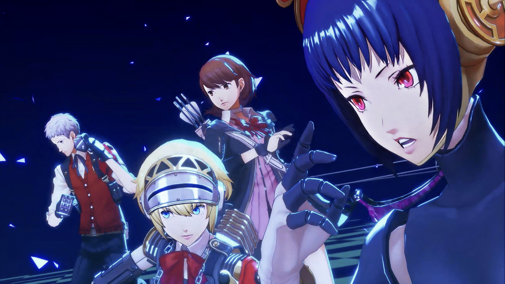

近日，我们有幸采访了《女神异闻录3 Reload》的制作人和开发团队，深入了解了这款备受期待的重制版游戏背后的开发故事和设计理念。
首先，能否告诉我们为什么会决定重制《女神异闻录3》？
《女神异闻录3》在系列历史上占有非常特殊的地位，它引入了"影时间"、社交系统等许多影响后续作品的重要概念。我们认为，让新一代玩家体验这个故事，并让老玩家以现代技术重新体验，是非常重要的。
在重制过程中，最大的挑战是什么？
平衡保留原作精髓与引入现代游戏机制是一个巨大挑战。我们花费了大量时间在如何保留原作的情感冲击力，同时使用现代技术提升游戏体验上。
团队还特别提到，重新编排的音乐是项目中最具挑战性的部分之一。原作的音乐由目黑将司创作，深受玩家喜爱，因此在重制时既要保留原作的氛围，又要利用现代音频技术提升听觉体验。
制作人还透露，游戏中的塔尔塔罗斯迷宫经过了精心重制，不仅在视觉上更加震撼，还调整了部分机关和布局，以提供更流畅的游戏体验。
最后，开发团队表示，他们对完成这部作品感到非常自豪，并希望玩家能感受到他们对原作的敬意以及对粉丝的诚意。